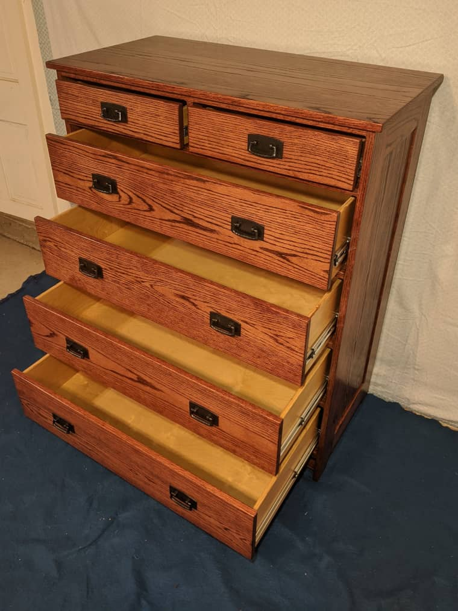
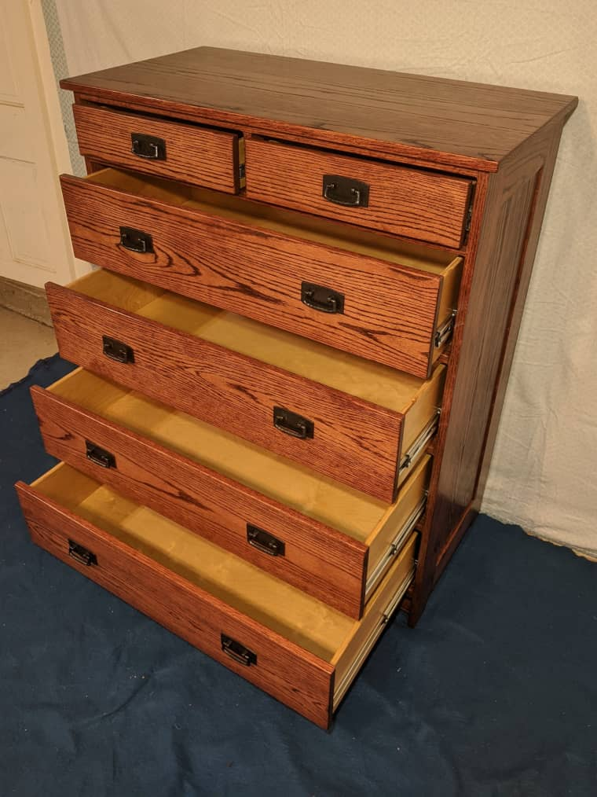

Bedroom Set
Below are some images of a bedroom set I made out of oak.
Most of it is solid oak with 3 coats of stain and 3 coats of oil based polyurethane. The latter took some getting used to since I've only worked with water based stuff in the past. It tends make run marks more readily so the coats need to be thin and the brush work more meticulous. Though I like the natural look of water based clear-coat, the oil does make the grain look richer
My bandsaw isn't capable of resawing, so I had to make the panels out of oak veneered plywood. The veneer on that stuff is very thin and makes sanding very stressful.
The drawers are made out of birch plywood that I didn't stain. The drawer slides are full extension side-mount. I would have preferred bottom-mount, but those require more space making the drawers more shallow.
The set was to replace the old set that my mom has used since she was a girl.
 
